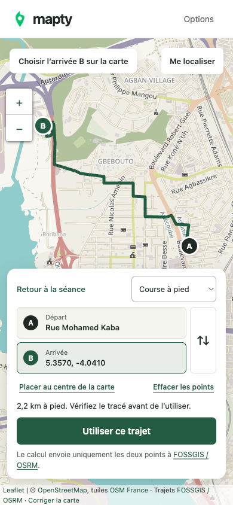
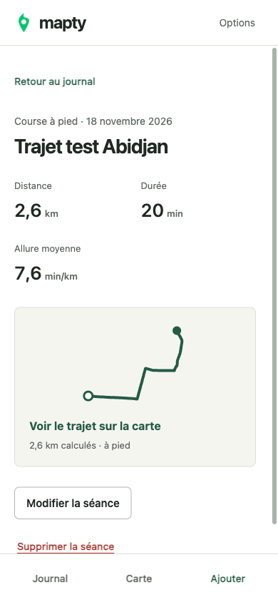

Vos sorties,
sur la carte.
À pied ou à vélo, gardez vos trajets, vos distances et vos temps dans un même carnet.
Essayer sans compteVotre carnet reste dans votre navigateur.

Un départ,
une arrivée.
Choisissez les points A et B. Mapty calcule un itinéraire par les rues et les chemins, adapté à la course à pied ou au vélo.
Vérifiez le tracé, puis ajoutez-le à votre séance.
Me localiser affiche votre position. Vous gardez la main sur le choix du départ et de l’arrivée.

Après la sortie,
le carnet.
Ajoutez la date, la distance et la durée de votre séance. Donnez-lui un nom si vous le souhaitez.
Retrouvez ensuite vos sorties, modifiez leurs informations et consultez votre bilan de la semaine.

Gardez une copie
de vos sorties.
Vos séances sont enregistrées dans le navigateur utilisé. Pensez à exporter votre carnet pour le sauvegarder ou le transférer sur un autre appareil.
Aucun compte n’est nécessaire pour commencer.
Comment sauvegarder mon carnet ?
Dans le carnet, ouvrez Options, puis Exporter mes séances. Conservez le fichier téléchargé. Pour le retrouver sur un autre navigateur, utilisez Importer une sauvegarde.